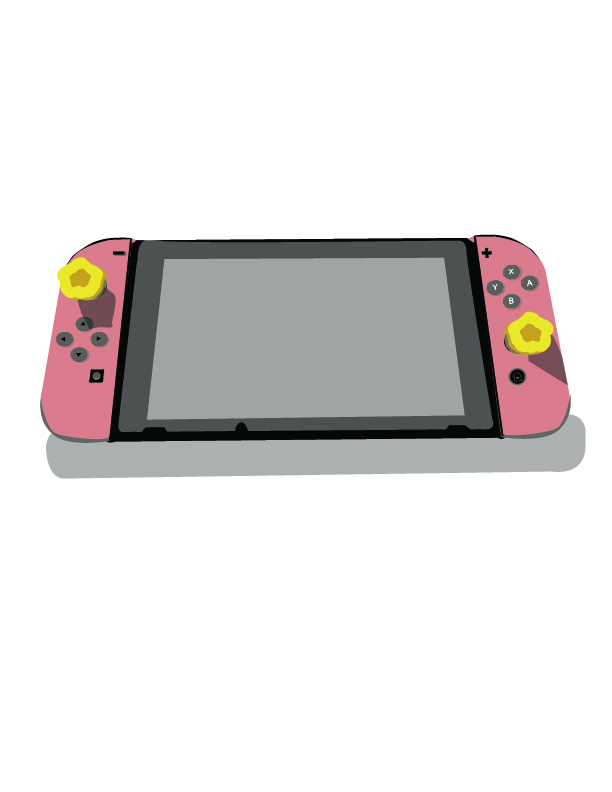
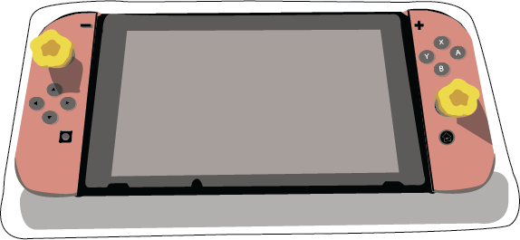
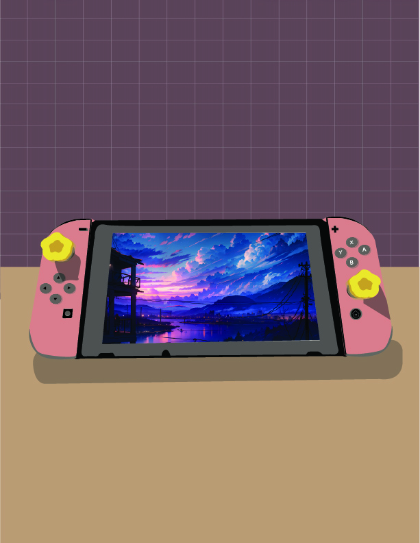

This is the first version of the project that I attempted.



Here is the first version of the illustrator sticker project that was enjoyable to do and rewarding through all the hard work in general. It's my pink switch (though the other one is a matcha parfait) that unexpectedly had more parts than I expected.
The above sliding gallery shows the finished transparent version, the sticker version, and the finalized one with a filler image to look like a display screen of sorts.